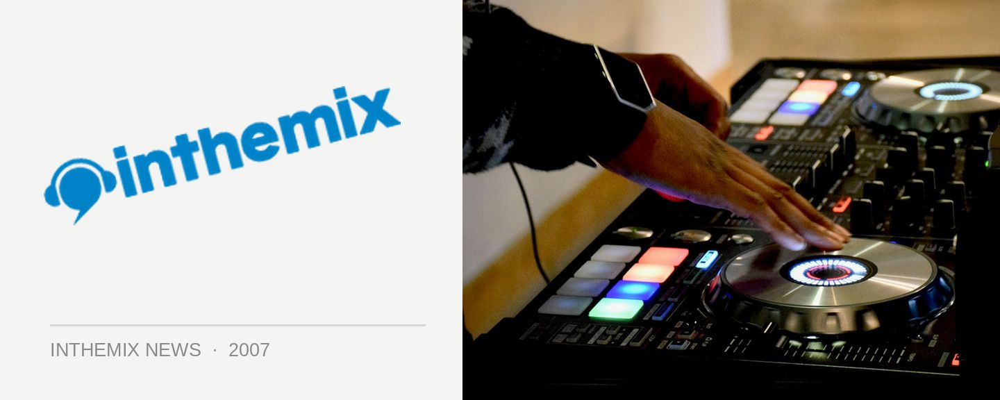

Warm up at We Love Sounds with ITM VIP
Winter is well and truly upon us but you don’t want that to hinder your hedonistic behaviour over the Long Weekend. Never fear because the ITM VIP area at We Love Sounds will feature warm cosy heating as well as sound pumped straight in from the Hordern Pavillion so you won’t miss a thing while you’re warming your bones. And considering the weather forecasts, the extra heat could come in handy: the Bureau of Meteorology is predicting showers and a minimum of 7 degrees!
The ITM-VIP tent will also provide the opportunity to rub shoulders with some of your favourite artists playing at the festival as the VIP space will be accommodating the performers too, and the winner of ITM’s big We Love Sounds competition will be having their photo taken there with the artist of their choice during the day. It will be the ideal place to take a break from the festival action and to catch up with your ITM friends away from the crowds, inside a beautifully decorated space with a private bar.
Of course the VIP area isnt the only benefit to being an ITM-VIP; membership opens the door to excellent discounts at some of the coolest clubs, bars and stores across Australia, as well as providing access to discount tickets to events and a gift pack upon signing up with a value of over $50 including ITM merchandise and a free CD of your choice.
If you’re not a member already, check out the ITM VIP Program for your opportunity to get pampered (and warm) at We Love… Sounds.